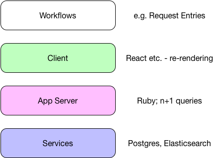
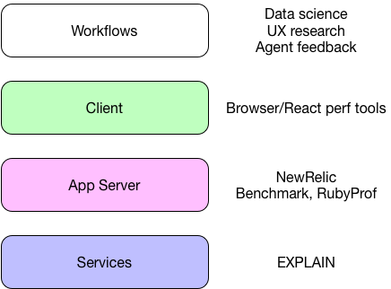
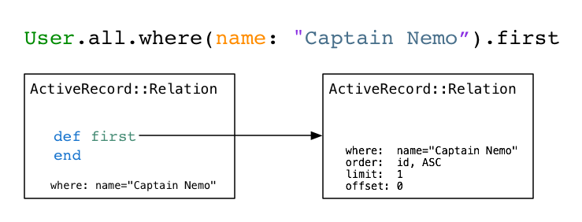
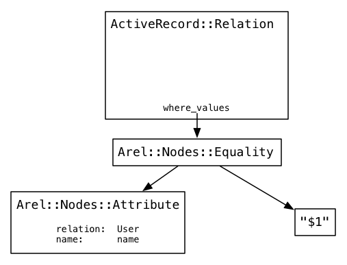
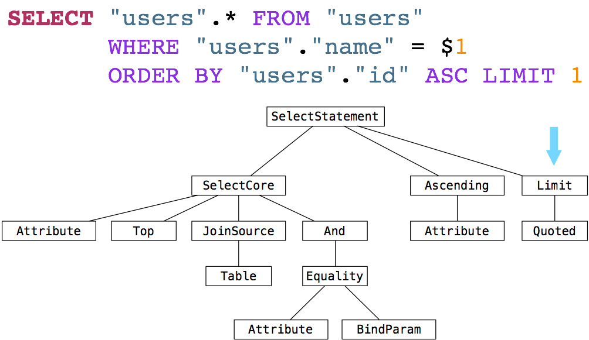
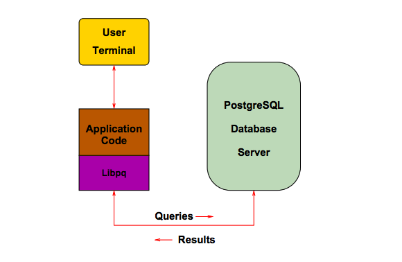
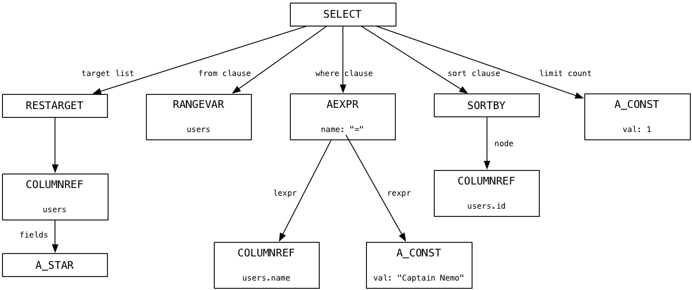
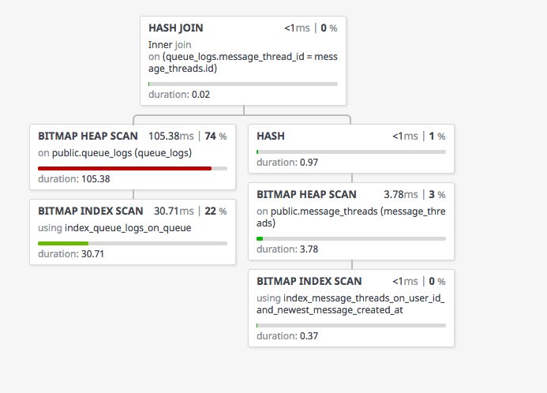

+++


🐻
+++
+++
Set or modify transaction names:
ruby
def contacts_results(search_term, tags, page_number: 0, paginate: true)
transaction_name = NewRelic::Agent.get_transaction_name
if search_term.blank?
NewRelic::Agent.set_transaction_name("#{transaction_name} - empty")
elsif UserConfig.value_for_user_id_and_key(@user.id, 'experimental-search').to_b
NewRelic::Agent.set_transaction_name("#{transaction_name} - experimental")
elsif search_term.split(/\s+/).length > 3
NewRelic::Agent.set_transaction_name("#{transaction_name} - long")
end
+++
Measure a block:
```ruby include ::NewRelic::Agent::MethodTracer
self.traceexecutionscoped(['MessageThreadTagsController/logworkaction']) do logworkaction(:messagethreadtagged, messagethreadtag, clientcreatedat: nil, threadid: params[:messagethreadid].toi) end ```
+++
Split out a method:
ruby
add_method_tracer :contacts_results, 'ClientSearch/contacts_results'
+++
[notes]
+++
!debug
[demo]
Custom commands:
dp | epBenchmark
```ruby
rails> Benchmark.bm do |x| * x.report { User.find(2) } * end user system total real 0.020000 0.010000 0.030000 ( 0.031872)
rails> Benchmark.realtime { User.find 2 } => 0.004197215981548652
```
+++
RubyProf
```ruby
result = RubyProf.profile { AgentState.event_loop } printer = RubyProf::CallStackPrinter.new(result) printer.print(open("./profile2.html", "w"))
$> open profile2.html
```
🌝
select, map, group_by v. for loopsSEQUEL) -> SQL+++
Given sets X1 , S1, S2, . . , S, (not necessarily distinct), R is a relation on these n sets if it is a set of ntuples each of which has its first element from S1, its second element from Sz , and so on.
+++
xid)(xmin, xmax)xid IN [xmin, xmax]INSERT: create version with xmin = xidDELETE: create version with xmax = xidCOMMIT: set committed[xid] = true+++
VACUUM cleans these upauto_vacuum. Tuning this is a big deal for perf+++
xid is 32-bit integer (2^32 = 4 billion)xmin > xid and become visible 💥VACUUM FREEZE to set xmin to sentinel valueCOMMIT, write a binary log of the changes made to dataRegularly checkpoint, ie. flush to durable storage
Crash recovery: find last checkpoint and replay
+++
Logs are tables in motion -- Jay Kreps
cf. Streams (Kafka/Kinesis etc.)
🐡
ActiveRecord, arel etc(Pat Shaughnessy)

+++

+++

👾
+++

+++
+++

+++
Replace Views with underlying query tree
+++
📌
+++
postgresql.conf
``` seqpagecost = 1.0 # Read 8K Page from disk sequentially randompagecost = 4.0 # Random I/O cputuplecost = 0.01 # Process a row cpuindextuplecost = 0.005 # Process an index entry cpuoperator_cost = 0.0025 # Perform an operation
```
Goal: Find a good path fast enough so that it actually matters
+++

+++